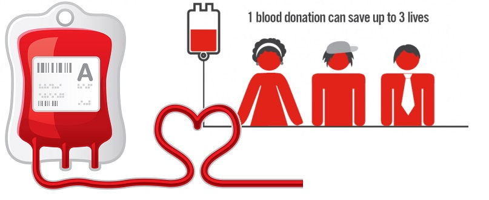
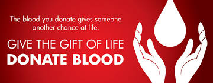
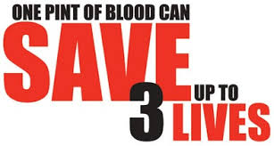
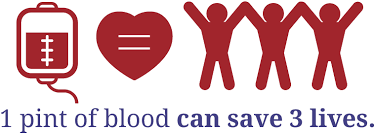
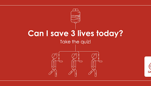
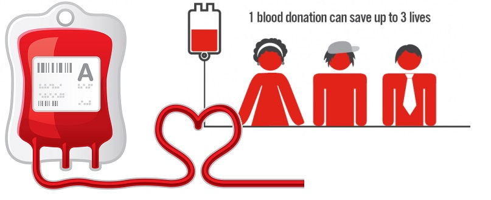
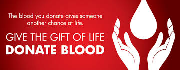
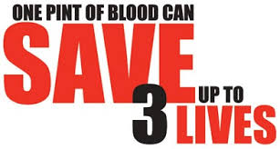
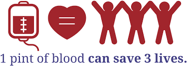
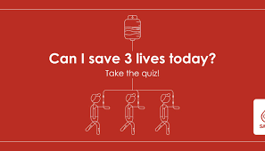

One Donation Helps Three
 









One Donation Helps Three
Your single donation can be separated in into different components, benefitting as many as three patients.
Whole blood has cellular components and liquid plasma. Cellular components include red blood cells, white blood cells and platelets. The cells are suspended in liquid plasma that contains coagulation factors, electrolytes, albumin, globulin and other proteins.
Your blood is separated into the following components (within six hours of collection)
A) Red Blood Cell Concentrate (RCC) -with or without additive solution-SAGM/ADSOL-(prepared from 450 ml whole blood)
“It contains 150-200 ml red blood cells from which 80% of the plasma has been removed. RCC with additive solution contains minimum residual plasma to which 100 ml of additive solution has been added. It is indicated to increase oxygen carrying capacity of the anemic patients.
Plasma has been removed thus it decreases chances of allergic or anaphylactic reactions. Additive solution has advantage of increasing shelf life of RCC from 35 days to 42 days.
B) RBCs Leukocytes Reduced
It contains reduced number of leucocytes (<5×106). We have Optipress machine through which leucocyte reduced RCC is prepared. Many of the allergic transfusion reactions are due to leucocytes or cytokines released by them. Hence these products eliminate most of these reactions.
C) Saline Washed RBCs
Red cells are washed using sterile normal saline. It removes plasma which includes proteins, antibodies or antigens that may cause damage to the patients, especially multi transfused patients. However it should be used within 24 hours of preparation.
D) Platelets (Random Donor Platelets-RDP)
Platelets are collected from one unit of blood and re-suspended in an appropriate volume of plasma. It is indicated in treatment of bleeding due to thrombocytopenia (reduced platelet count).
E) Apheresis Platelet (Single Donor Platelets-SDP)
Platelets are collected from one donor on cell separator machine. Donors are selected if they fulfill certain requirement. Platelet count of one unit is equal to that of five to six units of RDP. Patients of thrombocytopenia are benefited by transfusion of this product.
F) Fresh Frozen Plasma (FFP)
It is plasma separated from a single whole blood unit and rapidly frozen within 6 hours of being collected. It contains all coagulation factors. It is useful in patients with multiple coagulation factor deficiencies. It is thawed before issue and should be administered as soon as possible after thawing.
G) Cryoprecipitate
They are precipitated proteins of plasma rich in factor VIII and fibrinogen obtained from a single unit of FFP. It is used as an alternate to factor VIII concentrate in treatment of hemophilia A, Von Willebrand factor deficiency.